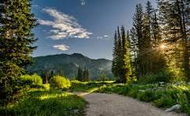

The Beautiful Outlands Of Blue Mountain!
Historical Info
Blue Mountain was founded in 1842 by Kenneth Blacksmith of the Sole Rangers clan.
Kenneth had been on a 7 month excursion to find new land. At last on November 27, 1842,
Blue Mountain was founded. On board the SunWaves Passion, were about 180 Norwegian Soldiers
along with 76 captured prisoners. It was then that Blacksmith had a vision that would not
only change the course of history, but it would mark the beginning of numerous colonies and industries.

Blue Mountains Historical Trail
The Great Green Bridge
Map Overview